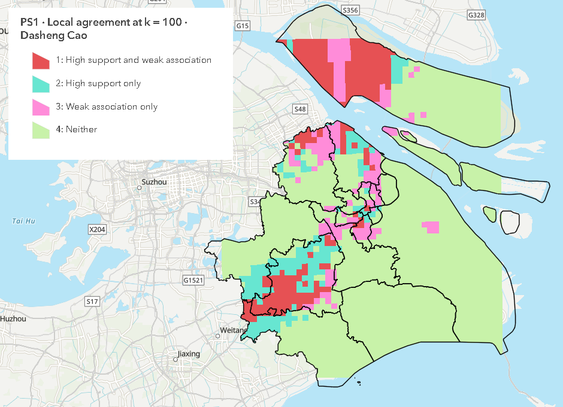

Problem Set 1 · November 2026
Local agreement between received support and weak preparedness-food-insecurity association depends on analytical scale
The question
Across the survey-supported area of Shanghai, do locations with higher received-support scores coincide with locations where household preparedness has a weak local association with food insecurity?
The data
This analysis uses the 2022 Shanghai Lockdown Survey, a purposive online survey conducted during the lockdown. Of 3,348 respondents, 2,795 had geocoded coordinates. I retained 2,545 respondents with matching reported and coordinate-derived districts and valid food-insecurity, preparedness, and received-support values. The survey is unweighted and is not representative of all Shanghai residents. Addresses were removed before the course file was provided.
The Shanghai district layer comes from DataV.GeoAtlas, a boundary service Alibaba publishes at geo.datav.aliyun.com. It is widely used and current. The sixteen districts also has their correct official codes. But the layer carries no licence statement, no accuracy figure and no contact.
The method
I complete the analysis using QGIS Desktop 3.44.14. I first filtered the survey to 2,545 retained respondents with valid analytical values, coordinates, and matching reported and coordinate-derived districts, then projected the points and the Shanghai district layer to EPSG:32651. Using Create Grid, I made a 2 km * 2 km grid from the survey-point extent. I used Centroids to create one point for each grid cell, then ran Distance Matrix to identify the 100 nearest retained respondents to every centroid using straight-line distance. Then, join food insecurity, preparedness, and received-support values to each local neighbour group using Join Attributes by Field Value. Moving on to the calculation part, a Python program is used to get Spearman's rho between preparedness and food insecurity for every grid cell, and the local mean received support was got by running the Statistics by Categories tool. I joined both results back to the grid, then used Clip with the Shanghai land polygon to remove cells outside the land area, leaving 2,035 cells. Finally, a Python program classified the clipped cells as high support and weak association, high support only, weak association only, or neither, using the top 20% of local support values and the bottom 20% of absolute Spearman-rho values. The agreement between the two selected sets was measure by the Jaccard coefficient.
The map below shows the distribution of the four categories of local agreement using four different colors. It is an aggregate grid map without respondent locations.

What I found
Unweighted local estimates from the 2022 Shanghai Lockdown Survey, a purposive online sample: 2,795 of 3,348 respondents had a coordinate, and 2,545 were retained after validity and district-match checks. Local groups were defined by straight-line distance in EPSG:32651, using the 100 nearest retained respondents for each 2 km grid-cell centroid. At the 20% selection cutoff, 244 grid cells met both criteria and the Jaccard agreement was 0.428. Grids that met both criteria mainly concentrates in Songjiang district and Chongming District. The Jaccard agreement suggest a moderate overlap, but it's not enough to treat higher received support and weak preparedness-food-insecurity association as interchangeable spatial indicators.
What this does not show
My analysis cannot see respondents without coordinates, respondents whose reported and coordinate-derived districts disagreed and respondents with invalid analytical values. It does not show that support caused lower food insecurity, identify individual experience, or establish statistically independent spatial clusters. In the sensitivity check, agreement changed from 0.100 at k = 25 to 0.475 at k = 125, and from 0.283 at a 15% selection cutoff to 0.506 at a 25% cutoff; the result is therefore dependent on analytical scale and threshold.
AI use: AI-assisted for explaining QGIS operations and Python coding, using ChatGPT and Codex. I selected the question, ran and checked the analysis, created the map, and take responsibility for the interpretation.